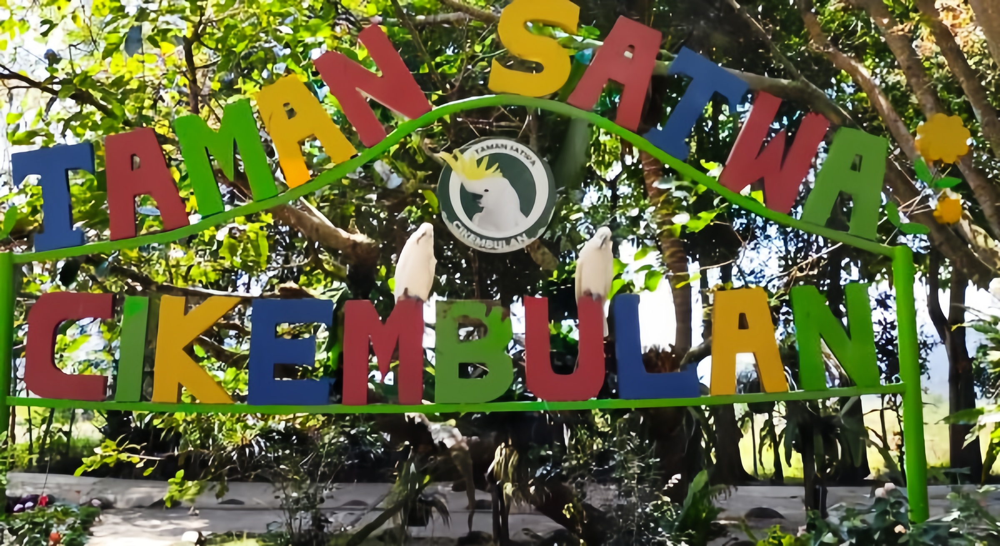

Jelajahi Taman Satwa Cikembulan Secara Virtual
Kenali beragam koleksi satwa, jelajahi setiap sudut taman, dan rasakan pengalaman edukasi satwa yang seru — langsung dari perangkat Anda.

Taman Satwa Cikembulan
Taman Satwa Cikembulan merupakan destinasi edukasi dan rekreasi keluarga yang menghadirkan beragam koleksi satwa dalam lingkungan yang asri dan alami. Taman ini bertujuan memberikan pengalaman belajar tentang keanekaragaman hayati bagi pengunjung dari segala usia.
Dengan komitmen terhadap konservasi dan edukasi, Taman Satwa Cikembulan berupaya menjadi sarana pengenalan satwa yang menyenangkan sekaligus bermakna bagi masyarakat dan lingkungan sekitar.
Virtual Tour 360° Interaktif
Jelajahi Taman Satwa Cikembulan secara virtual melalui tur 360 derajat. Klik, geser, dan temukan berbagai sudut menarik dari taman ini.
Klik tombol di bawah untuk mulai menjelajahi Virtual Tour Taman Satwa Cikembulan.
Buka Virtual TourMengapa Mencoba Virtual Tour?
Virtual tour memberikan pengalaman menjelajahi taman satwa yang unik, informatif, dan dapat diakses kapan saja.
Jelajahi Dari Mana Saja
Nikmati tur virtual taman satwa langsung dari rumah, sekolah, atau di mana pun Anda berada.
Kenali Beragam Satwa
Pelajari informasi tentang berbagai jenis satwa yang menjadi penghuni taman secara interaktif.
Pengalaman Interaktif
Navigasi 360° yang mudah digunakan, seolah-olah Anda sedang berjalan langsung di dalam taman.
Rencanakan Kunjungan
Lihat area dan fasilitas terlebih dahulu untuk mempersiapkan kunjungan langsung yang menyenangkan.
Fasilitas yang Tersedia
Taman Satwa Cikembulan menyediakan berbagai fasilitas untuk kenyamanan pengunjung.
Area Parkir
Luas dan memadai
Toilet
Bersih dan terawat
Tempat Ibadah
Musala tersedia
Area Makan
Kantin & kedai
Area Istirahat
Gazebo & bangku taman
Pusat Informasi
Petugas siap membantu
Spot Foto
Berbagai titik menarik
Area Edukasi
Belajar tentang satwa
Fasilitas Keluarga
Ramah anak & keluarga
Informasi Kunjungan
Semua yang perlu Anda ketahui sebelum berkunjung ke Taman Satwa Cikembulan.
Jam Operasional & Tiket
- Jaga kebersihan lingkungan taman
- Jangan mengganggu atau memberi makan satwa sembarangan
- Awasi anak-anak selama berada di area taman
- Ikuti petunjuk dan arahan petugas
Kontak & Media Sosial
Temukan Kami
Kunjungi Taman Satwa Cikembulan dan rasakan pengalaman melihat satwa secara langsung.
Taman Satwa Cikembulan
Jl. Cikembulan, Cikembulan, Kec. Kadungora, Kabupaten Garut, Jawa Barat 44153
Galeri Taman Satwa
Jelajahi koleksi satwa serta berbagai area dan wahana menarik di Taman Satwa Cikembulan.
Siap Menjelajahi Taman Satwa Cikembulan?
Mulailah petualangan virtual Anda sekarang juga. Kenali satwa, jelajahi setiap sudut taman, dan rencanakan kunjungan langsung bersama keluarga.